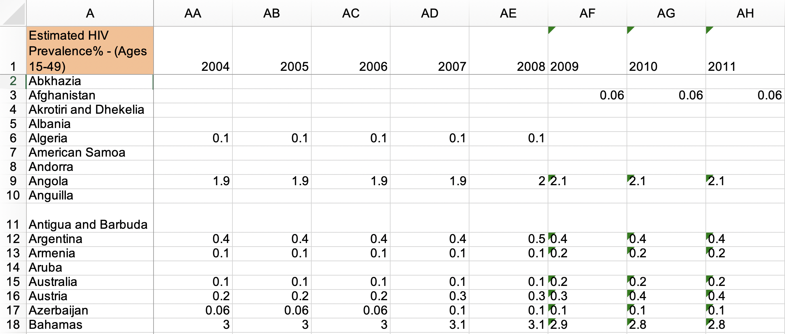
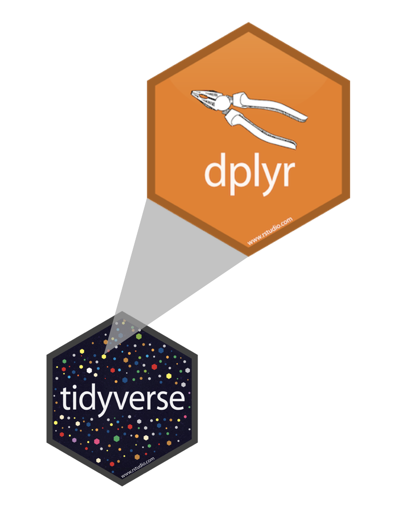

Data Wrangling I
STAT 7500
Katie Fitzgerald, adpated from datasciencebox.org
Tidy data
Happy families are all alike; every unhappy family is unhappy in its own way.
Leo Tolstoy
Tidy datasets are all alike; every untidy dataset is untidy in its own way
Characteristics of tidy data:
- Each variable forms a column.
- Each observation forms a row.
- Each type of observational unit forms a table.
Characteristics of untidy data:
!@#$%^&*()
What makes this data not tidy?

What makes this data not tidy?
What makes this data not tidy?

Grammar of data wrangling
A grammar of data wrangling…
… based on the concepts of functions as verbs that manipulate data frames

select: pick columns by namearrange: reorder rowsslice: pick rows using index(es)filter: pick rows matching criteriadistinct: filter for unique rowsmutate: add new variablessummarise: reduce variables to valuesgroup_by: for grouped operations- … and many more
Rules of dplyr functions
- First argument is always a data frame
- Subsequent arguments say what to do with that data frame
- Always return a data frame
- Don’t modify in place
Data: Hotel bookings
- Data from two hotels: one resort and one city hotel
- Observations: Each row represents a hotel booking
- Goal for original data collection: Development of prediction models to classify a hotel booking’s likelihood to be cancelled (Antonia et al., 2019)
Source: TidyTuesday
First look: Variables
[1] "hotel"
[2] "is_canceled"
[3] "lead_time"
[4] "arrival_date_year"
[5] "arrival_date_month"
[6] "arrival_date_week_number"
[7] "arrival_date_day_of_month"
[8] "stays_in_weekend_nights"
[9] "stays_in_week_nights"
[10] "adults"
[11] "children"
[12] "babies"
[13] "meal"
[14] "country"
[15] "market_segment"
[16] "distribution_channel"
[17] "is_repeated_guest"
[18] "previous_cancellations"
[19] "previous_bookings_not_canceled"
[20] "reserved_room_type"
[21] "assigned_room_type"
[22] "booking_changes"
[23] "deposit_type"
[24] "agent"
[25] "company"
[26] "days_in_waiting_list"
[27] "customer_type"
[28] "adr"
[29] "required_car_parking_spaces"
[30] "total_of_special_requests"
[31] "reservation_status"
[32] "reservation_status_date" Second look: Overview
Rows: 119,390
Columns: 32
$ hotel <chr> "Resort Hotel", "Resort …
$ is_canceled <dbl> 0, 0, 0, 0, 0, 0, 0, 0, …
$ lead_time <dbl> 342, 737, 7, 13, 14, 14,…
$ arrival_date_year <dbl> 2015, 2015, 2015, 2015, …
$ arrival_date_month <chr> "July", "July", "July", …
$ arrival_date_week_number <dbl> 27, 27, 27, 27, 27, 27, …
$ arrival_date_day_of_month <dbl> 1, 1, 1, 1, 1, 1, 1, 1, …
$ stays_in_weekend_nights <dbl> 0, 0, 0, 0, 0, 0, 0, 0, …
$ stays_in_week_nights <dbl> 0, 0, 1, 1, 2, 2, 2, 2, …
$ adults <dbl> 2, 2, 1, 1, 2, 2, 2, 2, …
$ children <dbl> 0, 0, 0, 0, 0, 0, 0, 0, …
$ babies <dbl> 0, 0, 0, 0, 0, 0, 0, 0, …
$ meal <chr> "BB", "BB", "BB", "BB", …
$ country <chr> "PRT", "PRT", "GBR", "GB…
$ market_segment <chr> "Direct", "Direct", "Dir…
$ distribution_channel <chr> "Direct", "Direct", "Dir…
$ is_repeated_guest <dbl> 0, 0, 0, 0, 0, 0, 0, 0, …
$ previous_cancellations <dbl> 0, 0, 0, 0, 0, 0, 0, 0, …
$ previous_bookings_not_canceled <dbl> 0, 0, 0, 0, 0, 0, 0, 0, …
$ reserved_room_type <chr> "C", "C", "A", "A", "A",…
$ assigned_room_type <chr> "C", "C", "C", "A", "A",…
$ booking_changes <dbl> 3, 4, 0, 0, 0, 0, 0, 0, …
$ deposit_type <chr> "No Deposit", "No Deposi…
$ agent <chr> "NULL", "NULL", "NULL", …
$ company <chr> "NULL", "NULL", "NULL", …
$ days_in_waiting_list <dbl> 0, 0, 0, 0, 0, 0, 0, 0, …
$ customer_type <chr> "Transient", "Transient"…
$ adr <dbl> 0.00, 0.00, 75.00, 75.00…
$ required_car_parking_spaces <dbl> 0, 0, 0, 0, 0, 0, 0, 0, …
$ total_of_special_requests <dbl> 0, 0, 0, 0, 1, 1, 0, 1, …
$ reservation_status <chr> "Check-Out", "Check-Out"…
$ reservation_status_date <date> 2015-07-01, 2015-07-01,…select a single column
View only lead_time (number of days between booking and arrival date):
select a single column
View only lead_time (number of days between booking and arrival date):
select a single column
View only lead_time (number of days between booking and arrival date):
select a single column
View only lead_time (number of days between booking and arrival date):
- Start with the function (a verb):
select() - First argument: data frame we’re working with,
hotels - Second argument: variable we want to select,
lead_time - Result: data frame with 119390 rows and 1 column
Input and output
dplyr functions always expect a data frame and always yield a data frame.
select multiple columns
View only the hotel type and lead_time:
select to exclude variables
# A tibble: 119,390 × 31
hotel is_canceled lead_time arrival_date_year
<chr> <dbl> <dbl> <dbl>
1 Resort Hotel 0 342 2015
2 Resort Hotel 0 737 2015
3 Resort Hotel 0 7 2015
4 Resort Hotel 0 13 2015
5 Resort Hotel 0 14 2015
6 Resort Hotel 0 14 2015
# ℹ 119,384 more rows
# ℹ 27 more variables: arrival_date_month <chr>,
# arrival_date_week_number <dbl>,
# arrival_date_day_of_month <dbl>,
# stays_in_weekend_nights <dbl>, stays_in_week_nights <dbl>,
# adults <dbl>, children <dbl>, babies <dbl>, meal <chr>,
# country <chr>, market_segment <chr>, …select a range of variables
# A tibble: 119,390 × 5
hotel is_canceled lead_time arrival_date_year
<chr> <dbl> <dbl> <dbl>
1 Resort Hotel 0 342 2015
2 Resort Hotel 0 737 2015
3 Resort Hotel 0 7 2015
4 Resort Hotel 0 13 2015
5 Resort Hotel 0 14 2015
6 Resort Hotel 0 14 2015
# ℹ 119,384 more rows
# ℹ 1 more variable: arrival_date_month <chr>select variables with certain characteristics
# A tibble: 119,390 × 4
arrival_date_year arrival_date_month arrival_date_week_number
<dbl> <chr> <dbl>
1 2015 July 27
2 2015 July 27
3 2015 July 27
4 2015 July 27
5 2015 July 27
6 2015 July 27
# ℹ 119,384 more rows
# ℹ 1 more variable: arrival_date_day_of_month <dbl>select variables with certain characteristics
Select helpers
starts_with(): Starts with a prefixends_with(): Ends with a suffixcontains(): Contains a literal stringnum_range(): Matches a numerical range like x01, x02, x03one_of(): Matches variable names in a character vectoreverything(): Matches all variableslast_col(): Select last variable, possibly with an offsetmatches(): Matches a regular expression (a sequence of symbols/characters expressing a string/pattern to be searched for within text)
What if we wanted to select columns, and then arrange the data in descending order of lead time?
Data wrangling, step-by-step
Select:
Pipes
What is a pipe?
In programming, a pipe is a technique for passing information from one process to another.
- Start with the data frame
hotels, and pass it to theselect()function,
What is a pipe?
In programming, a pipe is a technique for passing information from one process to another.
- Start with the data frame
hotels, and pass it to theselect()function, - then we select the variables
hotelandlead_time,
What is a pipe?
In programming, a pipe is a technique for passing information from one process to another.
- Start with the data frame
hotels, and pass it to theselect()function, - then we select the variables
hotelandlead_time, - and then we arrange the data frame by
lead_timein descending order.
Aside %>% vs. |>
Historically, the tidyverse community has used the %>% pipe operator, from the magrittr package (loaded with the tidyverse)
A couple of years ago, Hadley Wickham & Posit recommended we move to the “native pipe” |>
They are equivalent in most circumstances; |> supposedly is more streamlined and faster.
Shortcuts for the pipe
The following keystroke is a “shortcut” for typing the pipe operator:
- Command + Shift + M (Mac)
- Ctrl + Shift + M (Windows)
By default it will type the old pipe %>%. To change this, go to Tools > Global Options > Code > Use native pipe operator.
How does a pipe work?
- You can think about the following sequence of actions - find keys, start car, drive to work, park.
- Expressed as a set of nested functions in R pseudocode this would look like:
A note on piping and layering
|>used mainly in dplyr pipelines, we pipe the output of the previous line of code as the first input of the next line of code
+used in ggplot2 plots is used for “layering”, we create the plot in layers, separated by+
dplyr
ggplot2
❌
Error in `geom_bar()`:
! `mapping` must be created by `aes()`.
✖ You've supplied a <ggplot2::ggplot> object.
ℹ Did you use `%>%` or `|>` instead of `+`?✅
Code styling
Many of the styling principles are consistent across |> and +:
- always a space before
- always a line break after (for pipelines with more than 2 lines)
❌
✅
arrange in ascending / descending order
slice for certain row numbers
# A tibble: 5 × 32
hotel is_canceled lead_time arrival_date_year
<chr> <dbl> <dbl> <dbl>
1 Resort Hotel 0 342 2015
2 Resort Hotel 0 737 2015
3 Resort Hotel 0 7 2015
4 Resort Hotel 0 13 2015
5 Resort Hotel 0 14 2015
# ℹ 28 more variables: arrival_date_month <chr>,
# arrival_date_week_number <dbl>,
# arrival_date_day_of_month <dbl>,
# stays_in_weekend_nights <dbl>, stays_in_week_nights <dbl>,
# adults <dbl>, children <dbl>, babies <dbl>, meal <chr>,
# country <chr>, market_segment <chr>,
# distribution_channel <chr>, is_repeated_guest <dbl>, …R tip
In R, you can use the # for adding comments to your code. Any text following # will be printed as is, and won’t be run as R code. This is useful for leaving comments in your code and for temporarily disabling certain lines of code while debugging.
# A tibble: 5 × 32
hotel is_canceled lead_time arrival_date_year
<chr> <dbl> <dbl> <dbl>
1 Resort Hotel 0 342 2015
2 Resort Hotel 0 737 2015
3 Resort Hotel 0 7 2015
4 Resort Hotel 0 13 2015
5 Resort Hotel 0 14 2015
# ℹ 28 more variables: arrival_date_month <chr>,
# arrival_date_week_number <dbl>,
# arrival_date_day_of_month <dbl>,
# stays_in_weekend_nights <dbl>, stays_in_week_nights <dbl>,
# adults <dbl>, children <dbl>, babies <dbl>, meal <chr>,
# country <chr>, market_segment <chr>,
# distribution_channel <chr>, is_repeated_guest <dbl>, …Quiz
How many rows and columns do you expect the following code to produce? starwars has 87 rows and 14 columns to begin with (87 x 14).
a. 87 x 14
b. 3 x 14
c. 87 x 3
d. 14 x 3Quiz
How many rows and columns do you expect the following code to produce? starwars has 87 rows and 14 columns to begin with.
a. 87 x 10
b. 10 x 14
c. 14 x 10
d. 10 x 87More dplyr verbs for wrangling a single data frame
We…
have a single data frame
want to slice it, dice it, juice it, and process it
Data: Hotel bookings
- Data from two hotels: one resort and one city hotel
- Observations: Each row represents a hotel booking
select, arrange, and slice
filter
filter to select a subset of rows
# A tibble: 79,330 × 32
hotel is_canceled lead_time arrival_date_year
<chr> <dbl> <dbl> <dbl>
1 City Hotel 0 6 2015
2 City Hotel 1 88 2015
3 City Hotel 1 65 2015
4 City Hotel 1 92 2015
5 City Hotel 1 100 2015
6 City Hotel 1 79 2015
# ℹ 79,324 more rows
# ℹ 28 more variables: arrival_date_month <chr>,
# arrival_date_week_number <dbl>,
# arrival_date_day_of_month <dbl>,
# stays_in_weekend_nights <dbl>, stays_in_week_nights <dbl>,
# adults <dbl>, children <dbl>, babies <dbl>, meal <chr>,
# country <chr>, market_segment <chr>, …Quiz
What rows remain?
A. Students A and D
B. Students B and C
C. Students A, C, and D
D. All studentsfilter for many conditions at once
filter for more complex conditions
# A tibble: 223 × 3
adults babies children
<dbl> <dbl> <dbl>
1 0 0 3
2 0 0 2
3 0 0 2
4 0 0 2
5 0 0 2
6 0 0 3
# ℹ 217 more rowsLogical operators in R
| Operator | Definition |
|---|---|
< |
Less than |
<= |
Less than or equal to |
> |
Greater than |
>= |
Greater than or equal to |
== |
Exactly equal to |
!= |
Not equal to |
| Operator | Definition |
|---|---|
x & y |
x AND y |
x \| y |
x OR y |
is.na(x) |
Test if x is missing |
!is.na(x) |
Test if x is not missing |
x %in% y |
Test if x is in y |
!(x %in% y) |
Test if x is not in y |
distinct and count
distinct to filter for unique rows
… and arrange to order alphabetically
# A tibble: 14 × 2
hotel market_segment
<chr> <chr>
1 City Hotel Aviation
2 City Hotel Complementary
3 City Hotel Corporate
4 City Hotel Direct
5 City Hotel Groups
6 City Hotel Offline TA/TO
7 City Hotel Online TA
8 City Hotel Undefined
9 Resort Hotel Complementary
10 Resort Hotel Corporate
11 Resort Hotel Direct
12 Resort Hotel Groups
13 Resort Hotel Offline TA/TO
14 Resort Hotel Online TA count to create frequency tables
count and arrange
count for multiple variables
# A tibble: 14 × 3
hotel market_segment n
<chr> <chr> <int>
1 City Hotel Aviation 237
2 City Hotel Complementary 542
3 City Hotel Corporate 2986
4 City Hotel Direct 6093
5 City Hotel Groups 13975
6 City Hotel Offline TA/TO 16747
7 City Hotel Online TA 38748
8 City Hotel Undefined 2
9 Resort Hotel Complementary 201
10 Resort Hotel Corporate 2309
11 Resort Hotel Direct 6513
12 Resort Hotel Groups 5836
13 Resort Hotel Offline TA/TO 7472
14 Resort Hotel Online TA 17729order matters when you count
# A tibble: 14 × 3
hotel market_segment n
<chr> <chr> <int>
1 City Hotel Aviation 237
2 City Hotel Complementary 542
3 City Hotel Corporate 2986
4 City Hotel Direct 6093
5 City Hotel Groups 13975
6 City Hotel Offline TA/TO 16747
7 City Hotel Online TA 38748
8 City Hotel Undefined 2
9 Resort Hotel Complementary 201
10 Resort Hotel Corporate 2309
11 Resort Hotel Direct 6513
12 Resort Hotel Groups 5836
13 Resort Hotel Offline TA/TO 7472
14 Resort Hotel Online TA 17729# A tibble: 14 × 3
market_segment hotel n
<chr> <chr> <int>
1 Aviation City Hotel 237
2 Complementary City Hotel 542
3 Complementary Resort Hotel 201
4 Corporate City Hotel 2986
5 Corporate Resort Hotel 2309
6 Direct City Hotel 6093
7 Direct Resort Hotel 6513
8 Groups City Hotel 13975
9 Groups Resort Hotel 5836
10 Offline TA/TO City Hotel 16747
11 Offline TA/TO Resort Hotel 7472
12 Online TA City Hotel 38748
13 Online TA Resort Hotel 17729
14 Undefined City Hotel 2mutate
mutate to add a new variable
Little ones in resort and city hotels
# A tibble: 3,929 × 2
hotel little_ones
<chr> <dbl>
1 Resort Hotel 1
2 Resort Hotel 2
3 Resort Hotel 2
4 Resort Hotel 2
5 Resort Hotel 1
6 Resort Hotel 1
# ℹ 3,923 more rows# A tibble: 5,403 × 2
hotel little_ones
<chr> <dbl>
1 City Hotel 1
2 City Hotel 1
3 City Hotel 2
4 City Hotel 1
5 City Hotel 1
6 City Hotel 1
# ℹ 5,397 more rowsWhat is happening in the following chunk?
# A tibble: 12 × 4
hotel little_ones n prop
<chr> <dbl> <int> <dbl>
1 City Hotel 0 73923 0.619
2 City Hotel 1 3263 0.0273
3 City Hotel 2 2056 0.0172
4 City Hotel 3 82 0.000687
5 City Hotel 9 1 0.00000838
6 City Hotel 10 1 0.00000838
7 City Hotel NA 4 0.0000335
8 Resort Hotel 0 36131 0.303
9 Resort Hotel 1 2183 0.0183
10 Resort Hotel 2 1716 0.0144
11 Resort Hotel 3 29 0.000243
12 Resort Hotel 10 1 0.00000838summarise and group_by
summarise for summary stats
# A tibble: 1 × 1
mean_adr
<dbl>
1 102.summarise() changes the data frame entirely, it collapses rows down to a single summary statistic, and removes all columns that are irrelevant to the calculation.
summarise() also lets you get away with being sloppy and not naming your new column, but that’s not recommended!
group_by for grouped operations
Calculating frequencies
The following two give the same result, so count is simply short for group_by then determine frequencies
Multiple summary statistics
summarise can be used for multiple summary statistics as well
Quiz
What does this code return?
A. A 1x1 data frame with one value: the mean of all scores
B. A new column with each student’s mean score
C. An error: summarise() needs group_by()
D. The same dataset as before
Quiz
What’s the result of this pipeline?
A. Keeps only students with score > 85
B. Creates a new column passed with TRUE/FALSE for all students
C. Both A and B
D. Neither